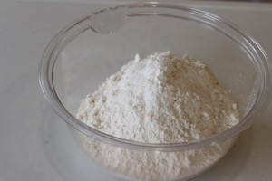
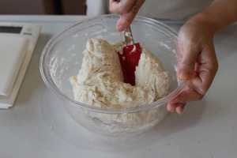
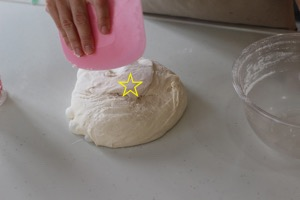
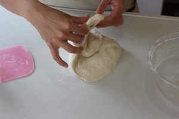
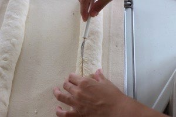
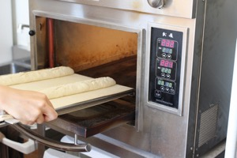

| 武蔵Filsで作る美しいバゲット | |
| 伊藤 香代子 | |
| Coupe Baguette (2015) | |
はじめに
本書の内容
本書は美しくバゲットを焼くためのレシピを詳しく説明した本です。焼成にはベーカーズ・プロダクション社製の小型業務用オーブン「武蔵Fils（フィス）」を使用します。
私は兵庫県西脇市で「Coupé Baguette（クープ バゲット）」という小さなパン屋を営んでいます。本書では店のレシピを説明用に少しアレンジしたものを使っています。もちろん、店でも武蔵Filsで焼いています。
本書の特徴は一点集中型になっている点です。つまり、ひとつのレシピしか載っていません。これは基本を極めてもらうためです。基本ができていれば、他のレシピに応用が利きます。逆に基本ができていなければ、他のレシピもうまく焼けません。
レシピはひとつしか載っていませんが、そのかわりバゲットの作り方を詳細に説明しています。本書では写真を多用し、作業のイメージを付きやすくしました。
さらに、写真だけでは伝わりにくい部分は動画も用意しています。本文に載っているリンクをクリックすれば YouTube にアップロードされた動画を見ることができます。
動画に関するお願い
本書で紹介している動画は購入者向けの特典動画です。ブログやツイッター等で動画のURLを公開するのはご遠慮ください。
対象となる読者
本書が一番適しているのはハード系のパンを何度か焼いてみたことがあるが満足できていない人、もっとうまく焼きたいと思っている人です。本書のレシピとこれまでの自分の焼き方を比較すれば、上手にバゲットを焼くためのポイントが見えてくるはずです。
また、ハード系のパンを全く焼いたことがないという人も理解しやすいように、できるだけ詳しく説明しました。最初からいきなりうまく焼けることはないかもしれませんが、本書を読んでおけば速く上達できると思います。
焼成には武蔵Filsを使っていますが、武蔵Filsを持っていなくても大丈夫です。設定温度や焼成時間以外は市販のオーブンを使う場合も同じなので、本書の大半はきっと参考になるはずです。
武蔵Filsについて
当店で使用している武蔵Fils
武蔵Fils（フィス）はベーカーズ・プロダクション社製の業務用小型オーブンです。トップブーランジェ達が愛用するオーブン「武蔵」の小型版（Filsはフランス語で息子の意）という位置づけになっています。
下火が強く、ハード系のパンや食パンを焼くのには打ってつけのオーブンです。他にも市販のオーブンレンジに比べて庫内温度が正確、扉を開け閉めしても温度が下がりにくい、一度温度が上がれば長時間連続使用しても電気代があまりかからない、といった特長を持っています。
業務用オーブンだけあって耐久性の高さも特筆すべきレベルです。私は4年以上2台の武蔵Filsを使い続けていますが、どれだけ過酷に使っても一度も故障したことがありません。
市販のオーブンレンジに比べるとサイズはやや大きいですが、1m四方ぐらいのスペースがあれば一般家庭でも設置可能です。電源は単層200Vを使います。これはエアコンでも使用されるタイプの電源で、簡単な電気工事で設置することができます。
購入前に試し焼きをすることも可能です。詳しくは株式会社ベーカーズ・プロダクションにお問い合わせください。
ベーカーズ・プロダクションのWebサイト:http://www.bakers.co.jp/
本書で使用する道具
主な道具は以下の通りです。どれも製菓材料店で購入できます。ただし、全く同じものである必要はありません。手元になければ別の道具で代用してください。
デジタルスケール (A) / 計量スプーン (B) / 計量カップ (C)
ボウル 1.9ℓ (D) / 泡立て器 (E) / ゴムベラ (F)
クープナイフ (G) / 粉振り (H) / キャンバス地 (I)
スケッパー (J) / 取り板 (K)
材料
基本のバゲット2本分で使用する材料です。%はベーカーズパーセントを表します。
材料A
| リスドォル | 200g | 50% |
| メゾンカイザートラディショナル | 200g | 50% |
| 塩 | 6g | 1.5% |
| インスタントドライイースト | 小さじ 1/16 (0.2g) | 0.05% |
材料B
| 水（軟水の浄水） | 270g | 67.5% |
| モルトエキス | 1.0g | 0.25% |
モルトエキスがない場合は2.4g（0.6%）のモルトパウダーでも代用できます。
ベーカーズパーセントとは
ベーカーズパーセントとは小麦粉の重さを100%として他の材料の割合を表す数値です。
ドライイーストの計量について
インスタントドライイースト 小さじ1/16は計量スプーンで計ってください。写真の計量スプーンは小さじ1/8が最小単位なので、必要なドライイーストの量はこの半分になります。
計量スプーンを持っていない人は0.1g単位で計れるデジタルスケールを使ってください。
タイムスケジュール例
私が朝食用のバゲットを焼く場合のタイムスケジュール例です。
発酵時間等は季節によって多少前後します。作業の合間に発生する空いた時間は家事にあてています。
【前日の晩】
20:00 ミキシング
20:30 パンチ（1回目）
21:00 就寝
【翌日の早朝】
02:00 起床、パンチ（2回目）
03:00 生地の分割
03:30 成形
04:00 焼成開始
04:30 焼き上がり
それでは次の章から基本のバゲットの作り方を説明していきます。
1. ミキシング
まず、粉と水を混ぜ合わせます。生地を「こねる」のではなく、材料を「混ぜる」イメージです。
1.ボウルに材料Bを入れる。モルトエキスは混ぜて溶かしておく。水の温度は常温が望ましい。冷水だとモルトエキスが溶けにくくなる。
2.ボウルに材料Aを入れる。

3.泡立て器で軽く混ぜ合わせる。
4.粉にモルトを溶かした水を入れる。
5.ゴムベラを使って外から中へ、粉をひっくり返すように混ぜていく。
6.混ざってきたら混ざりきっていない粉っぽいところをボウルに押しつけながら混ぜていく。

7.粉と水がざっくり均等に混ざったら手を止める。
8.続いて生地がなめらかになるように手で「混ぜる」。
作業時間の目安は1～2分。
しっかり「こねる」必要はない。
9.手で触ったときに均等に混ざっていないところ（ダマになっている部分など）があれば、ボウルに押しつけて丸める。
均等に混ざるまでそれを繰り返す。
10.全体がなめらかになってきたら完了。
ハード系の生地はグルテンを出すとクープの開きや内層に悪影響が出るので混ぜすぎないようにする。
ダマがなくなってきたら多少表面がボコボコしていても問題ない。
11.ラップをして室温（20～25℃）で30分おく。ラップにはこね終わった時刻を書いておくと発酵時間の目安になる。
2. パンチ（1回目）
生地をさらになめらかにし、弾力を持たせます。
1.ミキシング後、30分経った生地の状態。ミキシング直後よりも生地が平べったくなっている。
ここからあとの工程は表面と裏面の違いを意識する必要がある。大事なタイミングで写真に「○（表面）」「☆（裏面）」の印を付ける。
2.スケッパーを使って生地を取り出す。このとき、よくしなるスケッパーを使うと取り出しやすい。
取り出すときは生地をひっくり返し、表面を下に、裏面を上にする。
3.生地をのばして外から中央へ角度を変えながら5～6回折りたたみ、丸く整えていく。
形を整える過程で表面を上側に持ってくる。
4.表面に弾力が出るよう、生地を内側へ折り込んでいく。
5.形が整ったら表面を上にしてボウルに入れる。
6.ラップをして生地が1.5～2倍ぐらいになるまで室温（20～25℃）でおく。
目安としては4時間～5時間ぐらい。時間はあくまで目安なので、目で生地の状態を確かめることが重要。
3. パンチ（2回目）
さらに生地に弾力を持たせ、焼き上がりのボリュームを出します。クープの開きも良くなります。
1.1回目のパンチから1.5倍～2倍に膨らんだ生地。
2.作業台に張り付いたりして生地が傷むのを防ぐため、生地の表面に打ち粉をする。
打ち粉の中身は材料の粉と同じにする。
3.スケッパーにも打ち粉をする。
4.スケッパーを使って生地を取り出す。
1回目のパンチと同様、生地をひっくり返して表面を下に、裏面を上にする。

5.ガス抜き（大きな気泡を潰す作業）をしながら軽く生地を折りたたみ、丸め直す。
丸め直す過程で表面を上にする。

6.形が整ったら表面を上にしてボウルに入れる。
7.ラップをしてさらに生地が1.5～2倍ぐらいになるまで室温（20～25℃）でおく。
目安としては1～2時間ぐらい。
4. 生地の分割
生地を二等分し、形を整えます。
1.焼成に向けて武蔵Filsの電源を入れ、上火240℃、下火220℃に設定する。
2.2回目のパンチから1.5倍～2倍に膨らんだ生地。
【ワンポイントアドバイス】
夏場で気温が高い場合は生地がダレやすくなります。
分割前（膨らんだ後）に30分ほど冷蔵庫に入れておくと、この問題を防ぐことができます。
3.スケッパーに打ち粉をする。
4.ボウルから生地を取り出す。
パンチのときと同様に、生地をひっくり返して表面を下に、裏面を上にする。
5.スケッパーを使って生地を二等分する。
6.ちょうど半分ずつになるように計量する。
1つの生地の重さはだいたい330～340g。
調節のために何度も切りすぎると生地のまとまりが悪くなる。できるだけ少ない回数で二等分する。
7.生地を外から中へ折りたたんで、長方形（ナマコ形）にする。
裏面（☆）を表面（○）で包み込むようにするのがポイント。
成形が終わると表面が上にくる。
8.もう1個の生地も同様に成形する。
きれいなナマコ形にしておかないと、このあとで成形がしにくくなるので注意する。
9.固く絞った濡れ布巾をかぶせて生地を20分程度休ませる。
5. 成形
細長いバゲットの形を作ります。美しいバゲットを焼くための重要な工程です。
成形はできるだけ素早く正確に行ってください。時間をかけすぎると生地がダレたり、成形を待っている生地の発酵状態が変わってきたりします。
生地がベタつくときは打ち粉を振るとベタつきを抑えることができます。ただし振りすぎると焼き上がりが粉っぽくなるので、必要最小限の量にしましょう。
1.20分程度休ませたあとの生地。休ませる前よりも少しふっくらしている。
2.キャンバス地に畝（うね）を作り、ライ麦粉（分量外）を振っておく。
3.作業台に打ち粉をする。
4.作業台の上で生地をひっくり返し、裏面（☆）を上にする。
5.手で押さえながら生地を長方形に広げる。
引っ張って伸ばすのではなく、あくまで押さえながら伸ばすこと。
引っ張ると生地がちぎれる原因になる。
6.大きな気泡があれば伸ばしながら潰す。
7.生地を広げ終わったときのサイズはおよそ横25cm、縦15cm。
このとき、きれいな長方形にしないと最後の成形で太さが均一にならない原因となる。
8.両端（長辺）を中央に向かって折りたたむ。
生地が真ん中で少し重なるようにする。
9.折りたたみが終わった状態。これで裏も表も「表面（○）」を使っていることになる。
10.折りたたんだ生地を少し外に広げるような感じで押さえていく。
11.生地をのばし終わったときのサイズはおよそ横30cm、縦10cm。
12.向こう側から中央に向けて生地を折りたたむ。
13.折りたたんだ部分をもう一度軽く押さえていく。
14.さらに向こう側から手前に生地を二つ折りにする。
【もっと詳しく】
この作業では最初に折りたたんだ生地と生地との境目（下の写真の黄色い線）を内側に巻き込むような形で折りたたむ。こうすることにより、生地の表面に張りが生まれ、クープが開きやすくなる。
15.とじ目を指でつまんでいく。
16.とじ目に打ち粉を振り、手のひらで転がしながら生地をのばしていく。
作業台に生地を押しつけるようにして軽く力を入れるときれいにのびる。
17.生地の長さが42～43cmになったら、のばすのを止める。
18.とじ目を下側にし、太さが均一になるように形を整えて、キャンバス地に乗せる。
19.もう一本も同じように成形し、キャンバス地の両端を洗濯ばさみ等で留める。
常温（25～30℃）で15～20分程度休ませる。
これは生地を膨らませるのではなく、ダメージを受けた生地を修復するのが目的。
6. クープ入れ～焼成
いよいよ最後の工程です。生地の仕上がりが良ければ、クープの入れ方を多少間違ってもクープはちゃんと開きます。あまり神経質にならないようにしましょう。
なお、この章ではスリップピールを使います。スリップピールがない場合はダンボールとクッキングシートで代用できます。詳しくは「よくある質問」の章を参照してください。
1.スチーム用に水を30cc用意しておく。小さな計量カップを使うと便利。
2.オーブンの温度が上火240℃、下火220℃まで上がっていることを確認する。
赤が実際の庫内の温度。緑は設定した温度。
3.生地を取り板に乗せる。
4.取り板からスリップピールの上に生地を移動させる。
スリップピールに乗せたときに生地のとじ目が下に来るようにする。
5.クープナイフを使ってクープを4本入れる。
※クープの入れ方についてはこの後の「クープをきれいに開かせるコツ」という章で詳しく説明しています。こちらもあわせてご覧ください。

6.クープを入れ終わったら生地を釜入れする。
焼成時間は25分。タイマーをスタートさせる。

7.扉を閉めたらすぐにスチーム用の水を入れる。
一気に入れず、少しずつ入れる。
8.スチームを入れ終わったら上火の設定を235℃に下げる。
9.釜入れ直後の生地の様子。
10.釜入れして1分経ったら、扉を少し開けて蒸気を逃がす。（3～5秒程度）
扉を閉めたままにすると蒸し焼き状態になり、クープが開きにくくなる。
11.5分後の庫内。ボリュームが出てクープが開いてきている。
12.焼成が終わったらケーキクーラーの上に置いて粗熱を取る。
13.（参考）内層にもしっかり気泡が入っている。
クープをきれいに開かせるコツ
きれいなクープは良い生地作りから
クープをきれいに開かせるためにはクープの入れ方だけでなく、生地の状態も大きく影響してきます。
パンチをしっかり行うことにより、生地に弾力が生まれ強い生地になります。また、慣れないうちは一次発酵（1回目のパンチと2回目のパンチの間の発酵時間）を多めに取ると、生地にボリュームが出てクープが開きやすくなります。
生地の状態が良ければクープが開くだけでなく、内層の気泡もよく入ります。まずは「良い生地」を作れるようになりましょう。
クープの入れ方
クープナイフを寝かせると皮を剥ぐような形になり、クープが開きやすくなります。ただし、初心者の方には少し難しいかもしれません。最初はある程度ナイフを立てて練習し、徐々に寝かせていくとよいでしょう。
クープを入れる際は力を入れずに素早く入れます。よく切れるクープナイフを使い、生地が動かないように片手で生地を軽く押さると良いでしょう。クープの深さは2～3mmを目安にしてください。
クープの長さと方向
下の図のように真ん中の2本を長めに、端の2本を短めにするとバランス良く開きます。これは真ん中の方が端よりもクープが少し開きにくいためです。図中に目安となる長さを示したので参考にしてください。
ただし、初心者の方は4本ではなく最初は1本から練習すると開きやすいと思います。
クープは生地に対して縦方向に入れます。くれぐれも横方向にクープを入れないようにしてください。下の図のようになってはいけません。
スチームの量
焼成時のスチームは多く入れすぎないようにしましょう。水分で生地が張り付き、開きにくくなります。
試行錯誤するときは条件を一つだけ変える
クープの話に限らず、試行錯誤するときは必ず条件を一つだけ変えるようにしてください。たとえば、水の量だけを変えるとか、焼成の温度だけを変える、といった感じです。一気に三つも四つも条件を変えてしまうと、何が良くて何が悪いのかがわからなくなってしまうからです。
よくある質問
家庭用オーブンでもきれいに焼けますか？
はい、家庭用オーブンでも頑張ればきれいに焼くことはできます。私も以前は家庭用オーブンを使って焼いていました。
ちなみにこれは武蔵Filsを使わずに焼いたバゲットの写真です。（武蔵Filsを購入する直前に焼きました）
まず、家庭用オーブンを使う場合は分量を半分にして1本ずつ焼いてください。
下火が重要になるので、家庭用オーブンの場合は天板を使って下火の火力を補います。天板をひっくり返して天板ごと最高温度で予熱してください。
温度設定や焼成時間は機種によって大きく異なります。各家庭のオーブンに合わせた温度や時間で焼いてください。
以前使っていた家庭用オーブンは何ですか？
パナソニック（ナショナル） ビストロ NE-W300 です。ただし、すでに生産終了になっている機種なのでオークション等でしか手に入らないと思います。
ちなみにビストロを使っていた頃は最高温度の320℃で予熱し、最高温度のままスチームを入れて5分焼成、それから200℃に下げ、20分焼成していました。ですが、現行機種のビストロは使ったことがないため、この手順で同じように焼けるかどうかはわかりません。
スリップピールを持っていません。どうしたらいいですか？
家庭用オーブンをお使いの方はスリップピールを持っていないという方も多いと思います。その場合はダンボールのような硬い紙とクッキングシートで代用することができます。
下の写真のように硬い紙の上にクッキングシートを置き、その上に生地を乗せます。そしてそれを一緒にオーブンの中に入れます。（下の写真には生地は乗っていません）
それから下の硬い紙だけを引き抜きます。こうするとクッキングシートと生地だけがオーブンの中に残ります。
他のフランスパン用準強力粉でも代用できますか？
はい、代用できます。ただし吸水量が変わってくるので、水の量を粉の特性に合わせて変える必要があります。また、クープの開き具合や焼成時間等も変わってきます。
ただ、本書のレシピは初心者の方でも扱いやすく、風味も豊かに仕上がります。製菓材料店でも手に入りやすいので、最初は同じ材料で作ってみることをお勧めします。
お店のバゲットと全く同じレシピですか？
いいえ、工程はほぼ同じですが、材料は一部異なります。店で焼く場合は一般の製菓材料店ではあまり扱っていない国産小麦を使ったり、天然酵母を使ったりしています。
本書では入手のしやすさと扱いやすさを重視して材料を少し変えました。材料は変えていますが、美味しいバゲットが焼けるように工程を工夫しています。
モルトの役割は何ですか？
モルトは生地のボリュームや色づきを良くするために入れます。ハード系のパンは砂糖とバターを使わないため、風味や色づきが他のパンに比べて劣るからです。
モルトエキスやモルトパウダーを使わずに焼くこともできますが、使った方が見た目や風味が良くなるので使用することをお勧めします。
予定があるけどパンは焼きたい。どうしたらいいですか？
2回目のパンチが終わってから70%ぐらい膨らんだ時点で冷蔵庫に入れてください。そうすると発酵のスピードが緩やかになります。
冷蔵庫から出して夏場は30分程度、冬場は1時間ほど室内に置くと分割の工程に入れます。
このように冷蔵庫を活用すれば、タイムスケジュールを調整しやすくなります。
おわりに
私がバゲットを焼けるようになるまで
私が本格的にバゲットを焼き始めたのは今から7年前の2008年頃です。パンのレパートリーを増やすためにハード系のパンも焼こうと思ったのがきっかけです。まだこの頃は店もやっておらず、武蔵Filsではなく市販の家庭用オーブンでパンを焼いていました。
菓子パンはそれなりにうまく焼けていたのですが、自分が焼いたバゲットはとてもひどい出来映えでした。「これではいけない。もっときれいなバゲットが焼きたい！」と思い、それからバゲットにのめり込む毎日が続きました。
ネットか何かの情報で「バゲットをうまく焼くためには最低でも200本は焼かなければいけない」という話を知り、「200本に到達するまで、これから毎日バゲットを焼く！」と宣言して夫を驚かせた（あきれさせた？）こともあります。でもこれは大げさな話ではなく、私は本当に毎日のようにバゲットを焼きました。正確な数はわかりませんが、たぶん1年間で200本以上焼いたと思います。
スランプに陥ってノイローゼみたいになった時期もありました。しかし、パンを焼くことは昔も今も大好きなので、失敗してもめげずに続けることができました。たくさん本を読んだり、何度も試行錯誤したり、そうした努力を続けていくうちにだんだん安定してきれいなバゲットが焼けるようになってきました。
これは2009年9月に焼いたバゲットの写真です。

載せるのが恥ずかしくなるぐらい不格好なバゲットです。これが5ヶ月後の2010年2月になるとこうなりました。
クープのエッジがちょっと立っています。バゲットの形状もシュッとしてきました。
そして、さらにその5ヶ月後、こちらが2010年7月に焼いたバゲットの写真です。
今のレベルから見るとまだまだな部分はありますが、最初にお見せした2009年9月頃の写真に比べるとずっと良くなっているのがわかると思います。
ちなみに上の写真はどれも武蔵Filsの導入以前に焼いたバゲットです。武蔵Filsは確かに高性能なオーブンです。しかし、武蔵Filsを買ったからといっていきなりきれいに焼けるわけではありません。ベーカーズ・プロダクションの方いわく、「釜の力は3割」だそうです。つまり、バゲットの出来の7割はオーブン以外の要素で決まるということです。みなさんもうまく焼けないからといってオーブンのせいにせず、まずは生地作りなど、自分の技術を磨いてください。
本書のレシピには私の何千時間にもわたる経験や試行錯誤の結果が詰まっています。その経験をすべて伝えるために、どのレシピ本にも負けないぐらい詳しくバゲットの作り方を説明したつもりです。何度も読み返して、何度も実践すれば、きっと普通に練習するよりも速く上達できると信じています。
パンを焼くことを楽しんでください。失敗したパンも美味しく食べましょう。楽しみながら毎日焼けば、きっとあなたもきれいなバゲットが焼けるようになるはずです！
著者プロフィール
伊藤 香代子
兵庫県西脇市生まれ。19歳のときに独学でパン作りを始め、25歳で「Coupé Baguette（クープ バゲット）」をオープンする。2児の母親でもあり、家事とパン作りに毎日励んでいる。
Coupé Baguette（クープ バゲット）について
筆者が一人で経営している小さなパン屋。家事とパン作りを両立させるため、毎週金曜と土曜の2日だけ営業している。使用しているオーブンは当然武蔵Fils。バゲットやカンパーニュといったハード系のパンはもちろん、食パンや菓子パン、ベーグルなども焼いている。開店は10時からだが、開店前に受け付けるお取り置きの電話だけで売り切れてしまうことも多い。
Webサイト:http://coupe-baguette.com/
改訂履歴
•2015/8/17 初版作成。
Credit
「武蔵Filsで作る美しいバゲット」
著者 伊藤 香代子
編集 伊藤 淳一
撮影 伊藤 香代子、伊藤 淳一
本書の無断転載・複製を禁じます。
本書に関するお問い合わせはnatural@coupe-baguette.com にお願いいたします。
本書中の会社名、商品名は該当する会社の商標または登録商標です。
© Kayoko Ito 2015